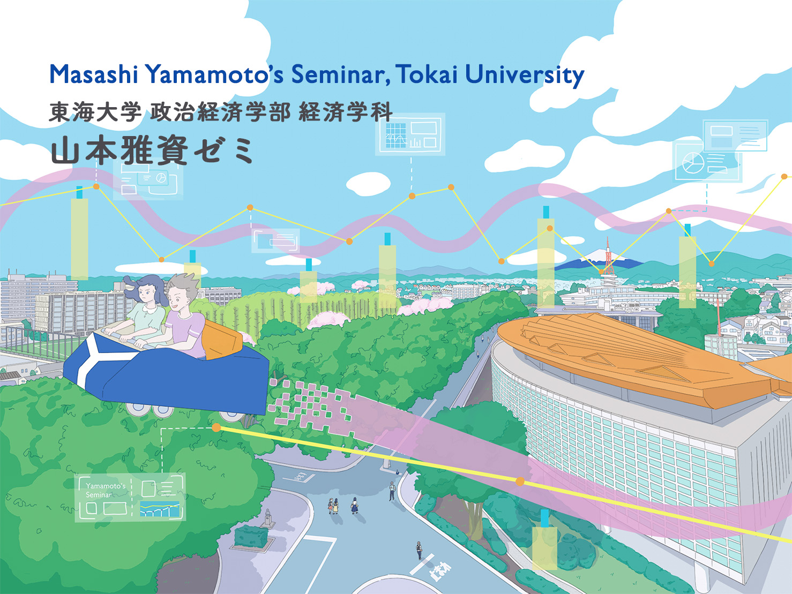

山本ゼミ＠東海大学 (2021-23)
Sorry, this page is only in Japanese.
2021-2023年度まで東海大学にてゼミを担当していました。

2020年度より以前の山本ゼミの活動についてはこちら。
本ゼミのメインテーマは環境問題を経済学的に考えることです。本ゼミでは、自分が勉強していることを簡潔に説明できること、 単なる知識ではない社会に出ても活かせる骨太のスキルの習得を目指しています。
担当教員のプロフィール（日本語）はこちら。
皆さんの中には、ややもすると、経済学による分析は現実的ではないと考えている人もいるかもしれません。しかし、 現実を完璧に再現したものがどんな場合にも優れているのでしょうか？仮に現実を完璧に描写した原寸大の地図があったとしても、道に迷っている人には全く役に立ちません。 ２万５千分の１の大きさの２次元の地図だとしても、目的に沿って必要な情報を提供できるものであれば十分なのです。
同様に、経済活動の方針を見極めるためには、現実を大胆かつ的確に捨象した「地図」が必要になります。また、仮に地図があったとしても、 地図の読み方が分からなければ、うまく目的地にたどり着くことはできません。
経済学を学ぶとは、現実経済を生き抜くための「地図」の見方、「地図」の作り方を学ぶことなのです。このような経済学の現実への向き合い方の基本的な考え方を 理解してもらうことが経済学科の目標ですが、本ゼミでは特に環境問題、持続可能な開発と経済学の接点を主に扱います。
2023年度
今年度も合同ゼミ論文報告会(インゼミ)における論文報告が主要な活動となります。
メンバー
4年ゼミ
- 山田 公平
- 大口 海怜
- 内田 家康
3年ゼミ
- 神田 仁祐
- 鹿島 太志
- 中村 陸登
- 帯金 真之介
- 原子 智滉
- 井島 太輝
- 小川 翔夢
- 村田 直樹
- 深野 恭兵
- 小熊 碧空
- 冨山 聖
- 髙橋 亮太
- 小早川 裕哉
- 中嶋 秀
春学期の概要
4年ゼミ
- 4年ゼミは自分のペースで卒業論文を進めて行くことを基本とします。
- 卒業論文を対象とした経済学科論文賞への応募を目指していきます。
3年ゼミ
- 春学期は、 大沼あゆみ・柘植隆宏「環境経済学の第一歩」, 有斐閣を輪読します。
- 春学期の最後には学んだトピックから共同ゼミ論文のテーマを選定します。今年度は３つか4つのグループに分かれて共同ゼミ論文を執筆する予定です。
- そのテーマについて、秋学期に共同論文の執筆を進め、他大学との合同論文報告会（インゼミ）で報告を行います。
2022年度
メンバー
4年ゼミ
- 工藤 脩真 (ゼミ長)
- 鴻巣 虎ノ介 (副ゼミ長)
- 石澤 隼
- 須貝 哲也
- 中込 季雄
- 野上 拓人
3年ゼミ
- 山田 公平 (3年: ゼミ長)
- 大口 海怜 (3年: インゼミ係)
- 内田 家康 (3年: インゼミ係)
2年プレゼミB
- 神田 仁祐(副ゼミ長), 菊川 稜太, 籾山 侑里, 山際 さくら, 横沢 銀河, 小川 翔夢, 黒田 菜津美(SNS係), 高野 栞那(SNS係), 村澤 柚子, 横田 陽香, 田尻 忠数(イベント係), 河野 凌輔, 北川 潤哉(イベント係), 崎田 柊平, 小早川 裕哉, 石川 悠慎(ゼミ長), 小野 恭介(副ゼミ長)
2年プレゼミA
- 神田仁祐、 籾山侑里、 山際さくら、 横沢銀河、 帯金真之介(副ゼミ長)、 村澤柚子、 横田陽香、 田尻忠数、 河野凌輔、 崎田柊平、 長坂威生、 小島玲杏(副ゼミ長)、 小早川裕哉、 小川和馬、 石川悠慎(ゼミ長)、 中嶋秀、 小野恭介、 舟寳奏乃
春学期の概要
3年ゼミ
- 本ゼミのテーマは、持続可能な開発です。
- 春学期は日経ESGという月刊誌の記事を出発点として興味のあるトピックについてグループで学びを深め、その成果を報告してもらいます。
- 春学期の最後には学んだトピックから共同ゼミ論文のテーマを選定します。
- そのテーマについて、秋学期に共同論文の執筆を進め、他大学との合同論文報告会（インゼミ）で報告を行います。
2年プレゼミB
- 秋学期は、R言語を用いたプログラミングを学びます。
- 最後にグループプロジェクトにチャレンジします。
2年プレゼミA
- 春学期は、誰もが身近な食卓の「食べる」という行為に関係する経済活動について、経済学の視点から考えます。
- 具体的には、下川哲(2021) 『食べる経済学』大和書房. の輪読を通じて、食の消費者として「食べる」ことがどれほど地球規模で環境に影響を及ぼしているかを考えます。
- 後半では高度にグローバル化された現代社会における食の問題について「食」の生産者の視点から見た課題についても学びます。
- その上で、グループに分かれて、興味を持ったトピックを一つ取り上げて、さらに掘り下げるグループプロジェクトに取り組みます。
2021年度
メンバー
3年ゼミ
- 工藤 脩真 (ゼミ長)
- 鴻巣 虎ノ介 (副ゼミ長)
- 石澤 隼 (夏合宿係)
- 須貝 哲也 (インゼミ係)
- 中込 季雄 (インゼミ係)
- 野上 拓人 (夏合宿係)
- 藤井 奏太 (夏合宿係)
2年プレゼミ
- プレゼミA: 阿部菜月、井原沙耶、辻憲伸、山田公平
- プレゼミB: 阿部菜月、井原沙耶、山田公平
春学期の概要
3年ゼミ
- 本ゼミのテーマは、持続可能な開発です。
- 現代経済は、グローバルなサプライチェーンに支えられており、私たちの身近で販売されている商品は世界中の様々な場所で生産されたもので成り立っています。
- そうした生産の過程で貴重な自然環境が生産要素として利用されている場合も少なくないため、近年「自然資本」という考え方が広がりました。
- この自然資本の問題についての理解を深めるため、３年生前期では、 藤田香 (2017)『ＳＤＧｓとＥＳＧ時代の生物多様性・自然資本経営』日経BP社、を輪読します。輪読は毎回複数の報告者を設定し、 8週程度で終了する予定です。
- その後は、統計ソフト「R」の使い方を学習します(要ノートPC持参)。Rは無料のソフトウェアで、計量経済学の分析はもちろんのこと、美しい可視化、 動的な地図の作成、リアルタイムの Twitterデータの解析などができる自由度の高い優れたソフトウェアです。
2年プレゼミ
- 発展途上国の課題を論じたバナジーとデュフロによる 「貧乏人の経済学」(みすず書房: 2012年に日本語版が出版)を輪読します。
- この２名の著者は「世界的な貧困の緩和への貢献」により、2019年にノーベル経済学賞を受賞しました。
夏合宿
例年、環境問題の学べる現場を訪問する夏合宿を実施していますが、コロナ禍を鑑み、昨年に引き続き中止となりました。
秋学期の概要
3年ゼミ
- 後期はインゼミで報告する共同論文の作成が主な作業になります。
- 11月後半から12月に開催の立教大学、青山学院大学、中央大学、成蹊大学、大阪経済大学との 合同ゼミ論文報告会(インゼミ)に参加して、共同論文を発表します。
- 前期に定めたグループに分かれて、この報告論文の作成準備＋プレゼン練習を行います。
- インゼミ終了後は、卒論のテーマについて調査を進め、学期の最後に自身の卒業テーマについてのプレゼンを行います。
2年プレゼミ
- 秋学期は、 バナジー・E. デュフロ (2020)『絶望を希望に変える経済学：社会の重大問題をどう解決するか』, 日本経済新聞出版. を輪読します。
- 前期のプレゼミAでは、同じ著者らによる『貧乏人の経済学』を輪読しましたが、この新刊では「格差」「環境」「移民」「AI」など、より現代的な社会問題について先進国における課題を中心に論じています。
インゼミ
論文タイトル：「大学におけるカーボンニュートラルの実現の可能性」
- インゼミにて11チーム中、2位となりました。
- 経済学科のウェブサイトに詳細を掲載してもらいました。ご興味のある方は こちらをご覧ください。
2020年度より以前の山本ゼミの活動についてはこちら。